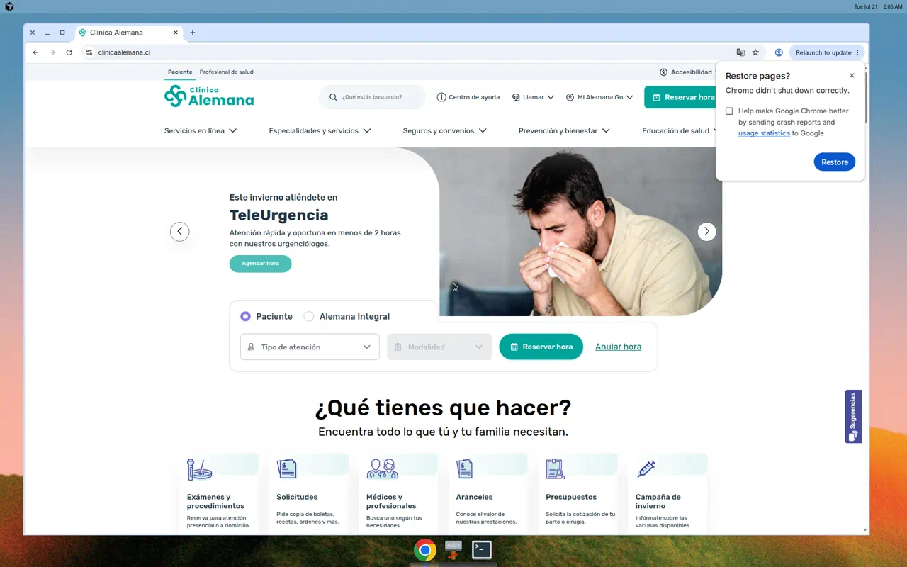
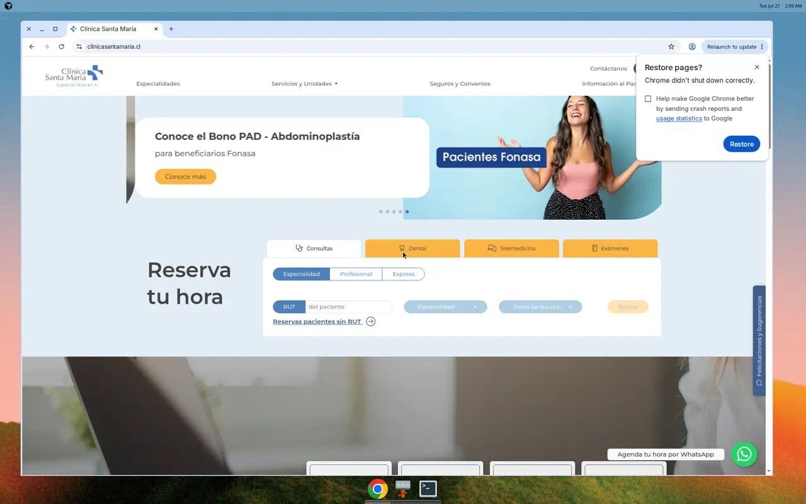

COPIAR

Clínica Alemana
Reservar hora se ve 3 veces
En el menú, en el banner y en el centro de la página. Sin ventanas que bloqueen.
Para Indisa: el botón de agendar debe saltar a la vista apenas se abre el sitio.
COPIAR

Clínica Santa María
Un solo bloque para agendar
Pestañas simples: Consultas · Dental · Telemedicina · Exámenes. Menú corto arriba.
Para Indisa: un formulario de reserva grande en el centro, no esconderlo en el menú.
EVITAR

Clínica Las Condes
Una ventana de seguro tapa todo
Sí destacan urgencia/rescate arriba, pero al entrar aparece un aviso comercial que frena la reserva.
Para Indisa: no poner pop-ups de seguros al cargar. Primero que el paciente pueda agendar.
EVITAR

Clínica Dávila
El hero vende el seguro, no la hora
Lo primero que se ve es contratar un seguro. Agendar queda más abajo o por WhatsApp.
Para Indisa: lo primero debe ser “Reservar hora”, no una campaña comercial.